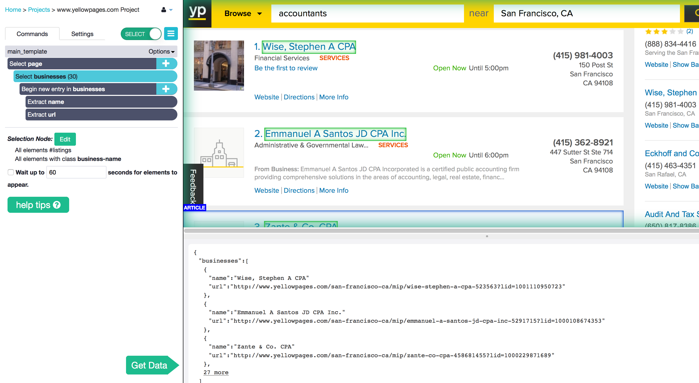
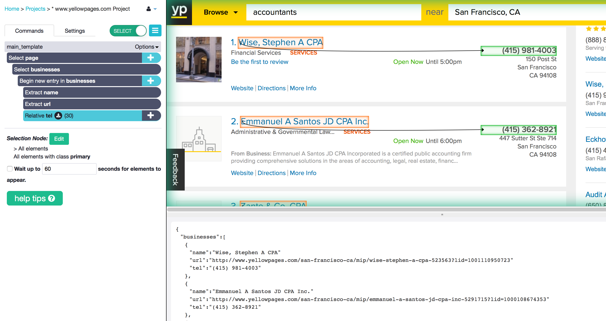
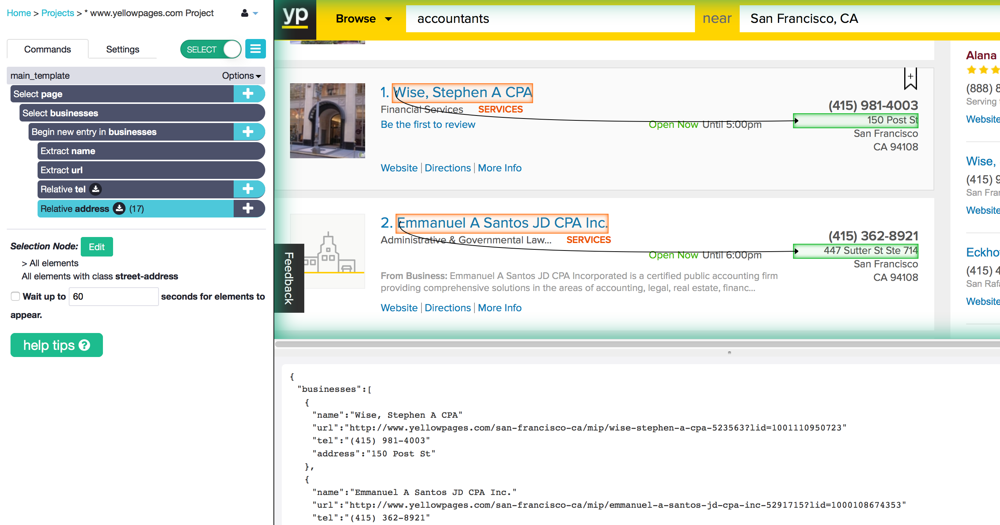
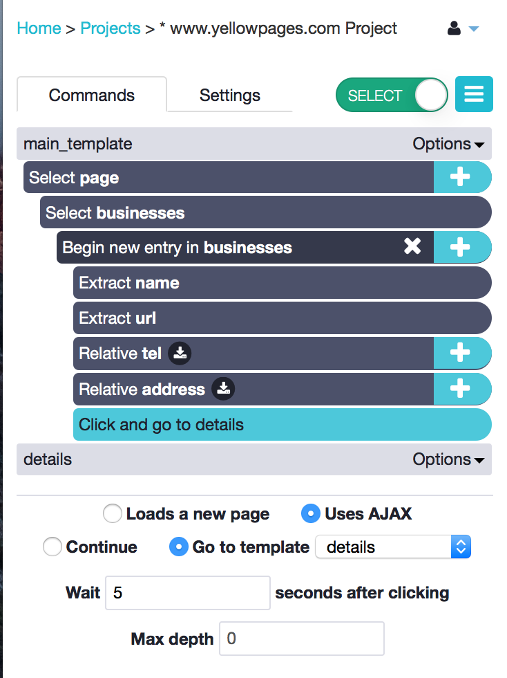
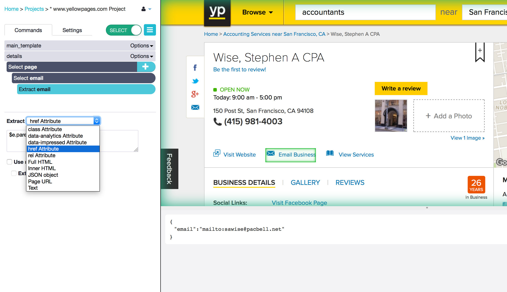
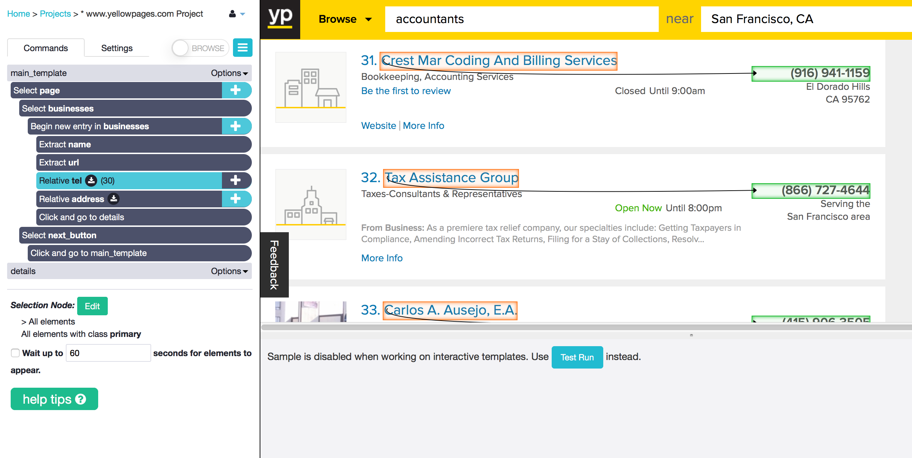
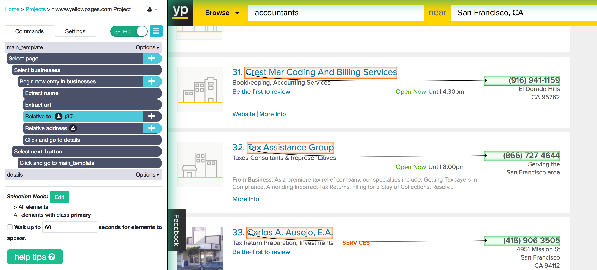
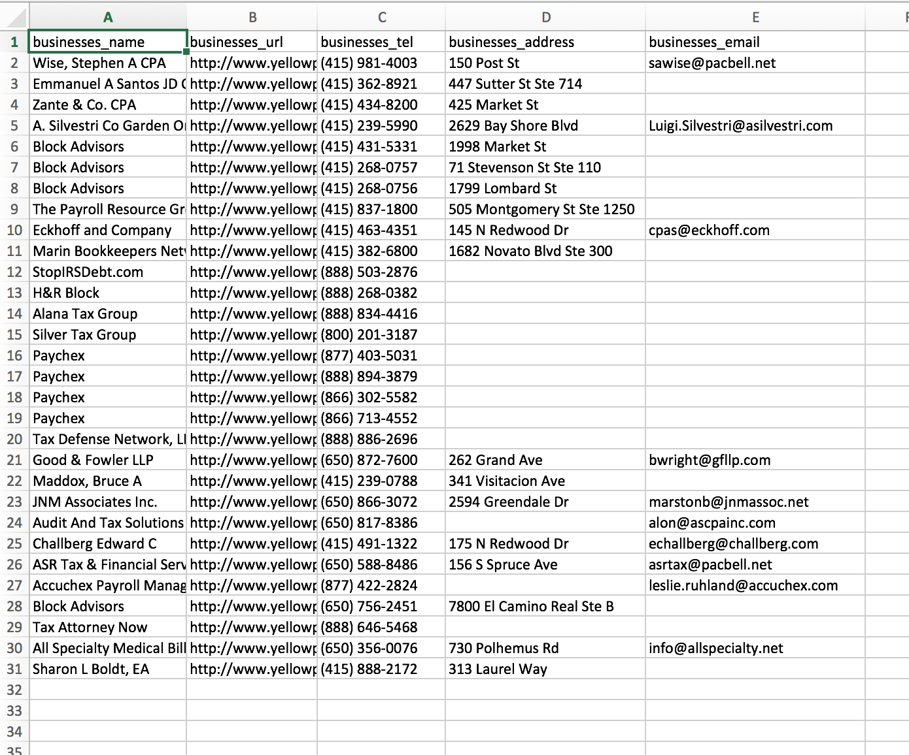

Find Business Leads and Contact Info from YellowPages
Is it time to fill your sales funnel? Don't fret - you can now update your lead list with new contacts super easily every time it runs dry. In this tutorial, I will show you how to get a few business contacts from YellowPages. You will learn to extract the name, email, address and telephone number for each business. The tips and tricks in this tutorial can apply to any business directory where you have a list of contacts, companies or even restaurants.
In this tutorial you will learn how to:
- Navigate through business listings on YellowPages.
- Go through multiple business directory pages with pagination.
- Extract contact information such as address, email and phone number for several businesses.
Step 1: Open ParseHub and YellowPages
- Open the ParseHub desktop app.
- Open the following link - http://www.yellowpages.ca/ in the browser. If you are not in the USA, go to your country's yellow pages.
- Search for "Accountants" near "San Francisco, CA" in the search bar or for any other professional in any city. You will be taken to the first page of relevant search results.
- Click "New Project" and "Start project on this URL" to create a new project.
- In the "Select page (1)" command, I checked off "Wait up to 60 seconds for elements to appear" just in case the page takes a while to load.
Step 2: Select all of the business names
- Using the Select tool, click on the first business' name on the webpage. The rest of the businesses will be highlighted yellow.
- Click on another one and they should all be selected and highlighted green. Go through the page to see if any of the businesses are not selected, and if they are not then click on them as well. Rename your selection businesses.
- I want to make sure the businesses load on the page before ParseHub starts trying to find them, so I click on the command and check off "Wait up to 60 seconds for elements to appear."
- ParseHub will automatically add a Begin a new entry command and extract the name and url of each business.
Note: You should now have all of the businesses selected and all of the business names extracted into your sample results. You will see a sample JSON with the first 3 business names.

Step 3: Scrape the telephone number for each business
- Click the plus button next to "Begin new entry in businesses and add a Relative Select command, to create a relationship between the business names you have selected and any other items on the page.
- Click on the first business name. Now click on the telephone next to the business name. All of the telephone numbers on the page for all of the businesses should be selected and extracted for you. Rename the selection tel.
Note: You should see the name and the telephone number appear in separate columns for each business in your sample results.

Step 4: Scrape the address for each business
- Click on the plus button beside "Begin new entry in businesses" again to add another Relative Select command.
- Click on a business name and then click on the address next to it. This selects each address and extracts it.
Note: Keep following the steps above to select any other information for each business, such as the postal code, description, categories or website.

Step 5: Navigate to the profile page of each business and get the email address
- Click on the plus button next to the "Begin new entry in businesses" command in the project design tab again, so you can add the next set of instructions right under the list.
- Add a Click command. You will be asked if you would like to go to the main template or create a new one: say that you would like to create a new one called "details".
- Once you click the button "Create new template" you will be taken to the first business' page. When you run your project, the instructions that you tell ParseHub to do on this page will be done on the pages of each business that you selected on the previous page.
Note: You should use the Click tool and create a new template every time the structure of the page changes (every time the webpage looks different). This is why we use "main_template" for the page where the businesses are listed and the "details" template for the profile page of each business.

Step 6: Scrape the email addresses for each business on YellowPages
- In the new "details" template, I again went to the "Select page (1)" command to check off "Wait up to 60 seconds for elements to appear."
- Now with the Select command I click on the "Email Business" button to select it.
- Click on the plus button beside the "Select email" command to open the command menu.
- Open the full menu by clicking "Advanced" and choose the Extract command.
From the dropdown menu in the ParseHub sidebar, choose "Extract href". Notice how the text in your sample results changes to
"mailto:email@email.com".
You can use ParseHub to parse just the "email@email.com" portion of the text, without the preceding "mailto:" (although it will take a little more technical knowledge). Check-mark the "Use regex" feature to do this.
In the text box enter the regular expression mailto:(.*). Now you should only see the email without the "mailto:" in the sample results.

Just like not every business has their address on yellow pages, some may not have their email either. ParseHub will just leave that section blank for them.
Step 7: Use pagination to get information from all pages that list businesses
- Go back to the search results page. ParseHub should have opened a new tab when traveling to the details page, so you can just go back to the other tab. This should also take you to your "main_template".
- Scroll down the page until you see the "Next" button.
- Add a Select command by clicking on the plus button next to the command
Select page", the very first command in your main_template. - Select the "Next" button by clicking on it. Rename the selection next_button.
- Click on the plus button next to this new "Select & Extract next_button" command and add a Click command.
- The next page has the same structure as the first page, so you will choose "Go to Existing Template", select "main_template" and click the "Go to Existing Template" button. On the next page you will see that each of the business names, telephone numbers and addresses are selected, just like the previous page.

Step 8: Run your project and download the data in CSV or JSON
- Click the green “Get Data” button. Click “Run” on the next page, then "Save and Run".
- Use the blue button at the top to refresh the page. You should also get an email when the run is finished. You can click on the link in this email to go to your finished results.
- Click the CSV icon to download your results in CSV. If you have Excel, the product data will open in Excel automatically.

That's it for now! If you want more ideas on growth hacking, business directories or lead generation feel free to reach out at angelina[at]parsehub.com.
Happy happy lead hunting!